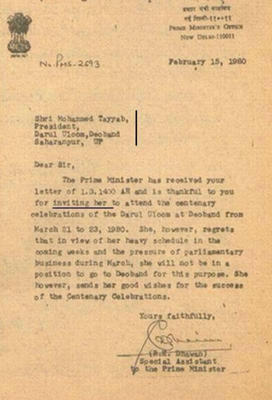
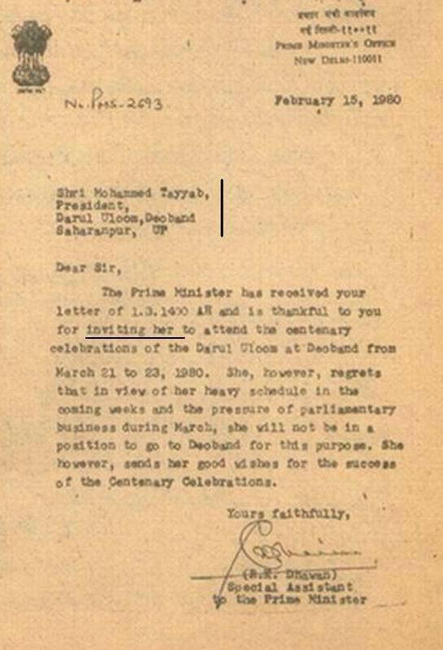

Deobandis Inviting Indira Gandhi – The Rector of Dar al-Uloom Deoband in 1980
Posted: Mon Jan 30, 2017 11:01 pm
Deobandis Inviting Indira Gandhi – The Rector of Dar al-Uloom Deoband in 1980
by Abu Khuzaimah Ansaari
we understand why the institutes do it in India in this era with this current day concept of social cohesion and this neo-con agenda in globalisation etc etc and some of our Ahlul Hadeeth have fallen into this badly and it is INCORRECT and may Allaah rectify their affairs Ameen, but what problems were there in 1980 when Qari Tayyab, the rector of Dar al-Uloom Deoband had to invite the Mushrikah Indira Gandhi to their Deobandi Madrassah for their 100 anniversary. Although she never went, she did however go at a later invitation

https://ahlulhadeeth.wordpress.com/2014 ... d-in-1980/
by Abu Khuzaimah Ansaari
we understand why the institutes do it in India in this era with this current day concept of social cohesion and this neo-con agenda in globalisation etc etc and some of our Ahlul Hadeeth have fallen into this badly and it is INCORRECT and may Allaah rectify their affairs Ameen, but what problems were there in 1980 when Qari Tayyab, the rector of Dar al-Uloom Deoband had to invite the Mushrikah Indira Gandhi to their Deobandi Madrassah for their 100 anniversary. Although she never went, she did however go at a later invitation

https://ahlulhadeeth.wordpress.com/2014 ... d-in-1980/